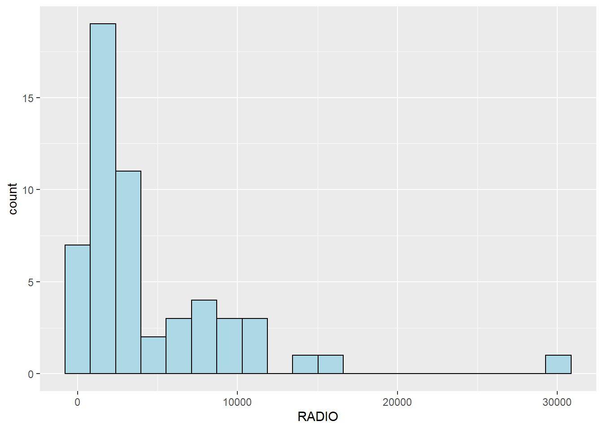
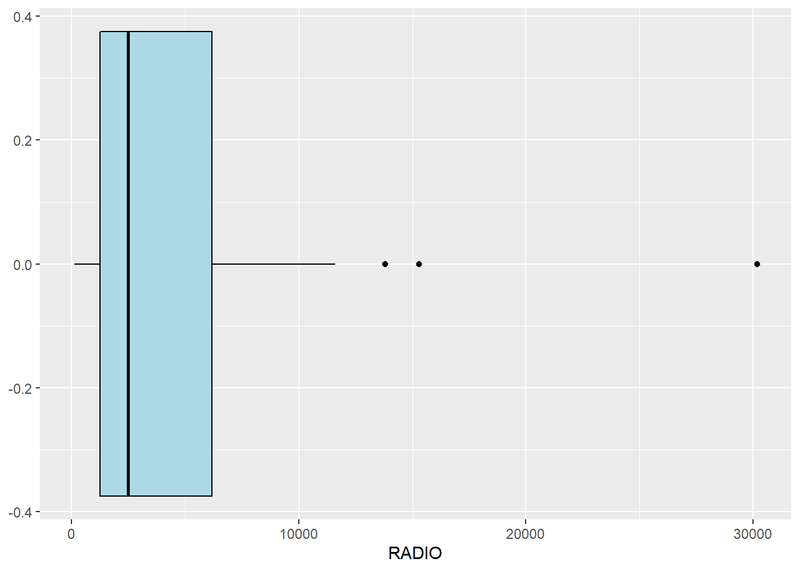
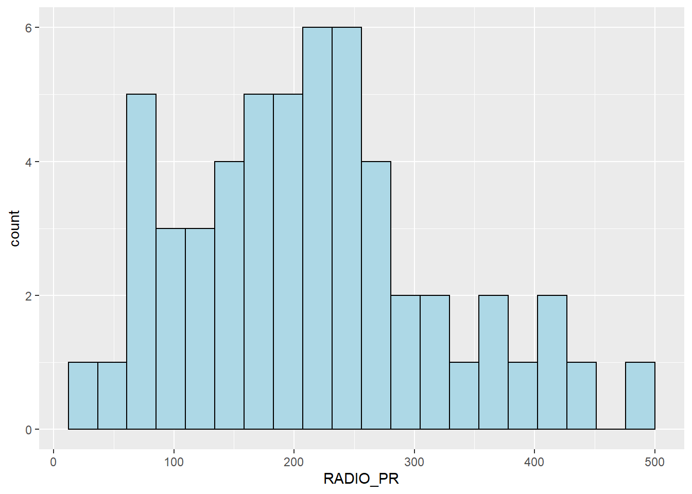
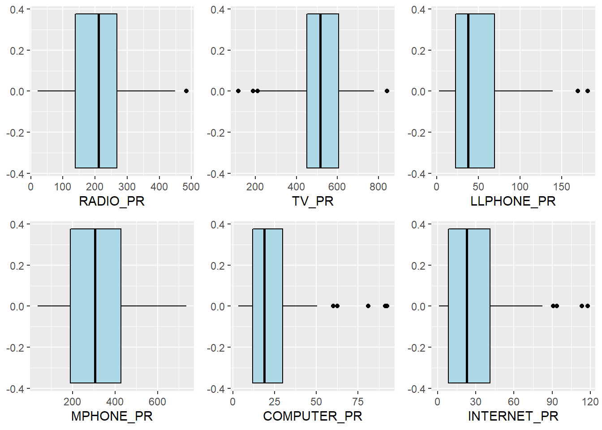
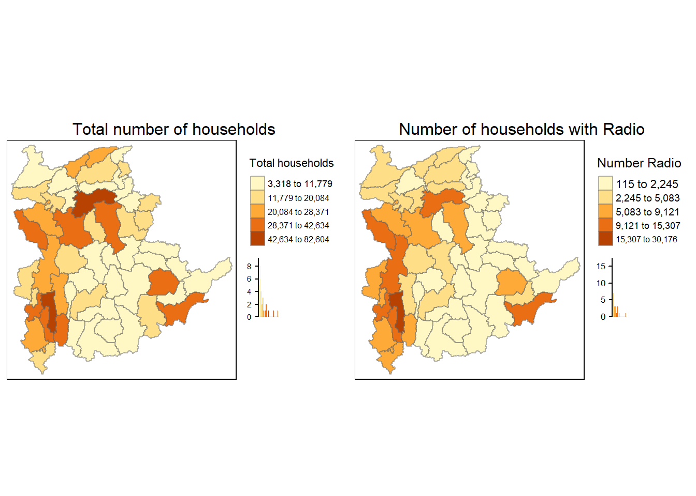

pacman::p_load(rgdal, spdep, tmap, sf,
ggpubr, cluster, factoextra, NbClust,
heatmaply, corrplot, psych, tidyverse)Hands-on Exercise 3
Geographical Segmentation with Spatially Constrained Clustering Techniques
1. Overview
This exercise aims to delineate homogeneous regions by using geographically referenced multivariate data. There are two main analyses, namely:
- hierarchical cluster analysis; and
- spatially constrained cluster analysis.
1.1. Learning Objectives
- Convert GIS polygon data into R’s simple feature data.frame by using appropriate functions of sf package.
- Convert simple feature data.frame into R’s SpatialPolygonDataFrame object by using appropriate functions of sf package.
- Perform cluster analysis using hclust() of Base R.
- Perform spatially constrained cluster analysis using skater() of Base R.
- Visualise analysis output using ggplot2 and tmap packages.
2. Getting Started
2.1. The Analytical Question
In geobusiness and spatial policy, it is common practice to delineate the market or planning areas into homogeneous regions by using multivariate data. In this hands-on exercise, we are interested to delineate Shan State, Myanmar, into homogeneous regions by using multiple Information and Community Technology (ICT) measures, namely: Radio, Telephone, Land line phone, Mobile phone, Computer and Internet at home.
2.2. The Data
Two data sets will be used in this study:
- Myanmar Township Boundary Data (i.e.
myanmar_township_boundaries). This is a GIS data in ESRI shapefile format. It consists of township boundary information of Myanmar. The spatial data are captured in polygon features. Shan-ICT.csv. This is an extract of the 2014 Myanmar Population and Housing Census Myanmar, at the township level.
Both data sets were downloaded from Myanmar Information Management Unit (MIMU).
3. Installing and Loading R Packages
We will prepare our R environment by installing and loading the necessary R packages, using p_load() function of pacman package.
The R packages needed for this exercise are as follows:
- Spatial data handling - sf, rgdal and spdep
- Attribute data handling - tidyverse, specifically readr, ggplot2 and dplyr
- Choropleth mapping - tmap
- Multivariate data visualisation and analysis - coorplot, ggpubr, factoextra and heatmaply
- Cluster analysis - cluster, NbClust, ClustGeoand psych
The code chunk below installs and loads the required R packages into the R environment.
4. Data Import and Preperation
4.1. Importing Geospatial Data into R Environment
In this section, we import Myanmar Township Boundary GIS data and its associated attribute table into the R environment.
The Myanmar Township Boundary GIS data is in ESRI shapefile format. We can import it into the R environment using st_read() of sf. We also use the piping function %>% from dplyr and perform filter() to extract only the data for the Shan state. This is done in the code chunk below.
shan_sf <- st_read(dsn = "data/geospatial",
layer = "myanmar_township_boundaries") %>%
filter(ST %in% c("Shan (East)", "Shan (North)", "Shan (South)"))Reading layer `myanmar_township_boundaries' from data source
`C:\zhuyiting1\ISSS624\Hands-on_Ex3\data\geospatial' using driver `ESRI Shapefile'
Simple feature collection with 330 features and 14 fields
Geometry type: MULTIPOLYGON
Dimension: XY
Bounding box: xmin: 92.17275 ymin: 9.671252 xmax: 101.1699 ymax: 28.54554
Geodetic CRS: WGS 84The imported Myanmar township boundary object is assigned to shan_sf. It is saved in simple feature data.frame format. We see that the full shapefile before filtering for Shan state has 330 features and 14 fields, which should include multipolygon geometry as its last field based on the geometry type displayed. Looking at the Environment pane, we see that shan_sf is filtered down to 55 observations. The bounding box shows the range of x and y, which are between 9 and 102 and suggests that the data is in decimal degrees format. The coordinate reference system (CRS) used is geographic, in wgs84.
We can view the content of shan_sf simple features data.frame by calling it directly, using the code chunk below.
shan_sfSimple feature collection with 55 features and 14 fields
Geometry type: MULTIPOLYGON
Dimension: XY
Bounding box: xmin: 96.15107 ymin: 19.29932 xmax: 101.1699 ymax: 24.15907
Geodetic CRS: WGS 84
First 10 features:
OBJECTID ST ST_PCODE DT DT_PCODE TS TS_PCODE
1 163 Shan (North) MMR015 Mongmit MMR015D008 Mongmit MMR015017
2 203 Shan (South) MMR014 Taunggyi MMR014D001 Pindaya MMR014006
3 240 Shan (South) MMR014 Taunggyi MMR014D001 Ywangan MMR014007
4 106 Shan (South) MMR014 Taunggyi MMR014D001 Pinlaung MMR014009
5 72 Shan (North) MMR015 Mongmit MMR015D008 Mabein MMR015018
6 40 Shan (South) MMR014 Taunggyi MMR014D001 Kalaw MMR014005
7 194 Shan (South) MMR014 Taunggyi MMR014D001 Pekon MMR014010
8 159 Shan (South) MMR014 Taunggyi MMR014D001 Lawksawk MMR014008
9 61 Shan (North) MMR015 Kyaukme MMR015D003 Nawnghkio MMR015013
10 124 Shan (North) MMR015 Kyaukme MMR015D003 Kyaukme MMR015012
ST_2 LABEL2 SELF_ADMIN ST_RG T_NAME_WIN T_NAME_M3
1 Shan State (North) Mongmit\n61072 <NA> State rdk;rdwf မိုးမိတ်
2 Shan State (South) Pindaya\n77769 Danu State yif;w, ပင်းတယ
3 Shan State (South) Ywangan\n76933 Danu State &GmiH ရွာငံ
4 Shan State (South) Pinlaung\n162537 Pa-O State yifavmif; ပင်လောင်း
5 Shan State (North) Mabein\n35718 <NA> State rbdrf; မဘိမ်း
6 Shan State (South) Kalaw\n163138 <NA> State uavm ကလော
7 Shan State (South) Pekon\n94226 <NA> State z,fcHk ဖယ်ခုံ
8 Shan State (South) Lawksawk <NA> State &yfapmuf ရပ်စောက်
9 Shan State (North) Nawnghkio\n128357 <NA> State aemifcsdK နောင်ချို
10 Shan State (North) Kyaukme\n172874 <NA> State ausmufrJ ကျောက်မဲ
AREA geometry
1 2703.611 MULTIPOLYGON (((96.96001 23...
2 629.025 MULTIPOLYGON (((96.7731 21....
3 2984.377 MULTIPOLYGON (((96.78483 21...
4 3396.963 MULTIPOLYGON (((96.49518 20...
5 5034.413 MULTIPOLYGON (((96.66306 24...
6 1456.624 MULTIPOLYGON (((96.49518 20...
7 2073.513 MULTIPOLYGON (((97.14738 19...
8 5145.659 MULTIPOLYGON (((96.94981 22...
9 3271.537 MULTIPOLYGON (((96.75648 22...
10 3920.869 MULTIPOLYGON (((96.95498 22...As the sf.data.frame conforms to Hardy Wickham’s tidy framework, we can use glimpse() of dplyr to check the data types of its fields.
glimpse(shan_sf)Rows: 55
Columns: 15
$ OBJECTID <dbl> 163, 203, 240, 106, 72, 40, 194, 159, 61, 124, 71, 155, 101…
$ ST <chr> "Shan (North)", "Shan (South)", "Shan (South)", "Shan (Sout…
$ ST_PCODE <chr> "MMR015", "MMR014", "MMR014", "MMR014", "MMR015", "MMR014",…
$ DT <chr> "Mongmit", "Taunggyi", "Taunggyi", "Taunggyi", "Mongmit", "…
$ DT_PCODE <chr> "MMR015D008", "MMR014D001", "MMR014D001", "MMR014D001", "MM…
$ TS <chr> "Mongmit", "Pindaya", "Ywangan", "Pinlaung", "Mabein", "Kal…
$ TS_PCODE <chr> "MMR015017", "MMR014006", "MMR014007", "MMR014009", "MMR015…
$ ST_2 <chr> "Shan State (North)", "Shan State (South)", "Shan State (So…
$ LABEL2 <chr> "Mongmit\n61072", "Pindaya\n77769", "Ywangan\n76933", "Pinl…
$ SELF_ADMIN <chr> NA, "Danu", "Danu", "Pa-O", NA, NA, NA, NA, NA, NA, NA, NA,…
$ ST_RG <chr> "State", "State", "State", "State", "State", "State", "Stat…
$ T_NAME_WIN <chr> "rdk;rdwf", "yif;w,", "&GmiH", "yifavmif;", "rbdrf;", "uavm…
$ T_NAME_M3 <chr> "မိုးမိတ်", "ပင်းတယ", "ရွာငံ", "ပင်လောင်း", "မဘိမ်း", "ကလော", "ဖယ်ခုံ", "…
$ AREA <dbl> 2703.611, 629.025, 2984.377, 3396.963, 5034.413, 1456.624, …
$ geometry <MULTIPOLYGON [°]> MULTIPOLYGON (((96.96001 23..., MULTIPOLYGON (…4.2. Importing Aspatial Data into R Environment
The csv file is imported using read_csv() of readr using the code chunk below.
ict <- read_csv("data/aspatial/Shan-ICT.csv")The imported attribute data set is saved in R’s tibble data.frame format and named ict. We see that it also has 55 observations, and 11 columns which include the number of households for each ICT variable from the 2014 Myanmar Population and Housing Census Myanmar.
The code chunk below uses summary() of Base R to show the summary statistics for each of the 11 variables in the ict data.frame.
summary(ict) District Pcode District Name Township Pcode Township Name
Length:55 Length:55 Length:55 Length:55
Class :character Class :character Class :character Class :character
Mode :character Mode :character Mode :character Mode :character
Total households Radio Television Land line phone
Min. : 3318 Min. : 115 Min. : 728 Min. : 20.0
1st Qu.: 8711 1st Qu.: 1260 1st Qu.: 3744 1st Qu.: 266.5
Median :13685 Median : 2497 Median : 6117 Median : 695.0
Mean :18369 Mean : 4487 Mean :10183 Mean : 929.9
3rd Qu.:23471 3rd Qu.: 6192 3rd Qu.:13906 3rd Qu.:1082.5
Max. :82604 Max. :30176 Max. :62388 Max. :6736.0
Mobile phone Computer Internet at home
Min. : 150 Min. : 20.0 Min. : 8.0
1st Qu.: 2037 1st Qu.: 121.0 1st Qu.: 88.0
Median : 3559 Median : 244.0 Median : 316.0
Mean : 6470 Mean : 575.5 Mean : 760.2
3rd Qu.: 7177 3rd Qu.: 507.0 3rd Qu.: 630.5
Max. :48461 Max. :6705.0 Max. :9746.0 The highest number among the maximum values is 62,388 households for television, which is consistent with our knowledge of it being a common source of entertainment and communication method in this era.
4.3. Deriving New Variables Using dplyr Package
The unit of measurement of the values are the number of households. Using these values directly will be biased by the underlying total number of households. In general, the townships with relative higher total number of households will also have higher absolute number of households owning radio, television, etc.
In order to overcome this problem, we will derive the penetration rate of each ICT variable, using the mutate() function of dplyr to create new columns as shown in the code chunk below. We also use rename() of dplyr to make the variable names more easily understood and when using them in the mutate() functions.
ict_derived <- ict %>%
mutate(`RADIO_PR` = `Radio`/`Total households`*1000) %>%
mutate(`TV_PR` = `Television`/`Total households`*1000) %>%
mutate(`LLPHONE_PR` = `Land line phone`/`Total households`*1000) %>%
mutate(`MPHONE_PR` = `Mobile phone`/`Total households`*1000) %>%
mutate(`COMPUTER_PR` = `Computer`/`Total households`*1000) %>%
mutate(`INTERNET_PR` = `Internet at home`/`Total households`*1000) %>%
rename(`DT_PCODE`=`District Pcode`,`DT`=`District Name`,
`TS_PCODE`=`Township Pcode`, `TS`=`Township Name`,
`TT_HOUSEHOLDS`=`Total households`,
`RADIO`=`Radio`, `TV`=`Television`,
`LLPHONE`=`Land line phone`, `MPHONE`=`Mobile phone`,
`COMPUTER`=`Computer`, `INTERNET`=`Internet at home`) We can see that the new variables are appended to theict data.frame in ict_derived, using the summary() function of Base R.
summary(ict_derived) DT_PCODE DT TS_PCODE TS
Length:55 Length:55 Length:55 Length:55
Class :character Class :character Class :character Class :character
Mode :character Mode :character Mode :character Mode :character
TT_HOUSEHOLDS RADIO TV LLPHONE
Min. : 3318 Min. : 115 Min. : 728 Min. : 20.0
1st Qu.: 8711 1st Qu.: 1260 1st Qu.: 3744 1st Qu.: 266.5
Median :13685 Median : 2497 Median : 6117 Median : 695.0
Mean :18369 Mean : 4487 Mean :10183 Mean : 929.9
3rd Qu.:23471 3rd Qu.: 6192 3rd Qu.:13906 3rd Qu.:1082.5
Max. :82604 Max. :30176 Max. :62388 Max. :6736.0
MPHONE COMPUTER INTERNET RADIO_PR
Min. : 150 Min. : 20.0 Min. : 8.0 Min. : 21.05
1st Qu.: 2037 1st Qu.: 121.0 1st Qu.: 88.0 1st Qu.:138.95
Median : 3559 Median : 244.0 Median : 316.0 Median :210.95
Mean : 6470 Mean : 575.5 Mean : 760.2 Mean :215.68
3rd Qu.: 7177 3rd Qu.: 507.0 3rd Qu.: 630.5 3rd Qu.:268.07
Max. :48461 Max. :6705.0 Max. :9746.0 Max. :484.52
TV_PR LLPHONE_PR MPHONE_PR COMPUTER_PR
Min. :116.0 Min. : 2.78 Min. : 36.42 Min. : 3.278
1st Qu.:450.2 1st Qu.: 22.84 1st Qu.:190.14 1st Qu.:11.832
Median :517.2 Median : 37.59 Median :305.27 Median :18.970
Mean :509.5 Mean : 51.09 Mean :314.05 Mean :24.393
3rd Qu.:606.4 3rd Qu.: 69.72 3rd Qu.:428.43 3rd Qu.:29.897
Max. :842.5 Max. :181.49 Max. :735.43 Max. :92.402
INTERNET_PR
Min. : 1.041
1st Qu.: 8.617
Median : 22.829
Mean : 30.644
3rd Qu.: 41.281
Max. :117.985 The derived proportions range between 1.041 for the Internet and 842.4 for television.
4.4. Joining Geospatial and Aspatial Data
We combine both sets of data into a single data.frame using left_join() of dplyr, which appends the second data.frame to the first based on the observations in the first. The shan_sf simple feature data.frame will be used as the base data object, and the ict_derived data.frame will be used as the join table.
As there are 4 variables which are common across both data sets, namely DT, DT_PCODE, TS, and TS_PCODE, we will specify the criteria for joining, in this case by TS_PCODE. We do so using the code chunk below.
shan_sf <- left_join(shan_sf,
ict_derived,
by=c("TS_PCODE"="TS_PCODE"))5. Exploratory Data Analysis (EDA)
5.1. EDA Using Statistical Graphics
We plot the distribution of variables (i.e. number of households with radio) using appropriate Exploratory Data Analysis (EDA) using the combination ggplot() (to initialise a ggplot object) with geom_histogram() (to plot a histogram) of ggplot2 as shown in the code chunk below.
ggplot(data = shan_sf,
aes(x = `RADIO`)) +
geom_histogram(bins = 20,
color = "black",
fill = "light blue")
Seeing the distribution being right-skewed and having counts that are far out to the right and disjoint from the rest of the frequency bars, we also use geom_boxplot() of ggplot2 to plot a boxplot, which is useful for detecting outliers which are displayed as individual points outside of the box-and-whiskers.
ggplot(data = shan_sf,
aes(x = `RADIO`)) +
geom_boxplot(color="black",
fill="light blue")
We see 3 individual dots displayed outside of the box-and-whiskers, signifying 3 outliers beyond 12,500 households.
Next, we also plot the distribution of the newly derived variable (i.e. Radio penetration rate (PR)) by using the code chunk below.
ggplot(data = shan_sf,
aes(x = `RADIO_PR`)) +
geom_histogram(bins = 20,
color = "black",
fill = "light blue")
We see that the Radio PR appears more normal with less outliers, but still slightly right-skewed.
We similarly plot the boxplot for Radio PR using the code chunk below.
ggplot(data = shan_sf,
aes(x = `RADIO_PR`)) +
geom_boxplot(color = "black",
fill = "light blue")
We can repeat the process for all 6 modes of ICT in the data, and combine them into a single figure using ggarrange() of ggpubr to group and arrange the plots (in a similar way to tmap_arrange() of tmap, except for ggplots instead of tmaps).
radio <- ggplot(data=shan_sf,
aes(x=`RADIO_PR`)) +
geom_histogram(bins=20,
color="black",
fill="light blue")
tv <- ggplot(data=shan_sf,
aes(x=`TV_PR`)) +
geom_histogram(bins=20,
color="black",
fill="light blue")
llphone <- ggplot(data=shan_sf,
aes(x=`LLPHONE_PR`)) +
geom_histogram(bins=20,
color="black",
fill="light blue")
mphone <- ggplot(data=shan_sf,
aes(x=`MPHONE_PR`)) +
geom_histogram(bins=20,
color="black",
fill="light blue")
computer <- ggplot(data=shan_sf,
aes(x=`COMPUTER_PR`)) +
geom_histogram(bins=20,
color="black",
fill="light blue")
internet <- ggplot(data=shan_sf,
aes(x=`INTERNET_PR`)) +
geom_histogram(bins=20,
color="black",
fill="light blue")
ggarrange(radio, tv, llphone, mphone, computer, internet,
ncol = 3,
nrow = 2)
From the histograms, we see that all ICT PRs are right-skewed with potential outliers, except TV PR which is left-skewed. We confirm this using boxplots.
radio <- ggplot(data=shan_sf,
aes(x=`RADIO_PR`)) +
geom_boxplot(color="black",
fill="light blue")
tv <- ggplot(data=shan_sf,
aes(x=`TV_PR`)) +
geom_boxplot(color="black",
fill="light blue")
llphone <- ggplot(data=shan_sf,
aes(x=`LLPHONE_PR`)) +
geom_boxplot(color="black",
fill="light blue")
mphone <- ggplot(data=shan_sf,
aes(x=`MPHONE_PR`)) +
geom_boxplot(color="black",
fill="light blue")
computer <- ggplot(data=shan_sf,
aes(x=`COMPUTER_PR`)) +
geom_boxplot(color="black",
fill="light blue")
internet <- ggplot(data=shan_sf,
aes(x=`INTERNET_PR`)) +
geom_boxplot(color="black",
fill="light blue")
ggarrange(radio, tv, llphone, mphone, computer, internet,
ncol = 3,
nrow = 2)
It turns out that TV PR has outliers on both the left and right of the box-and-whiskers. In addition, for mobile phone PR, there is no outlier.
5.2. EDA Using Choropleth Map
5.2.1. Plotting a Quick Choropleth Map
To have a quick look at the distribution of Radio PR of Shan State at township level, we will use a choropleth map.
The code chunk below plots a choropleth map using qtm() of tmap. This is a quick and easy way to get a quick view of the spatial distribution, coloured by 5 equal intervals, by simply specifying (i) the simple feature data.frame and (ii) the variable by which to colour the map.
qtm(shan_sf, "RADIO_PR")
We see darker regions of Radio PR in the extreme Northwest, along the West side and in the Southeast side of Shan State.
In order to reveal that the distribution shown in the choropleth map above is biased to the underlying total number of households at the townships, we will create two choropleth maps, one for the total number of households (i.e. TT_HOUSEHOLD.map) and the other for the total number of households with Radio (RADIO.map), using
tm_shape() - to plot the geometries of the sf data.frame,
tm_fill() - to specify the variable by which the polygons are coloured, number of intervals, types of intervals (e.g. equal, quantile), displayed title of the colour scale,
tm_borders() - to customise the border properties such as transparency, and
tm_arrange() - to plot multiple tmaps
of tmap in the code chunk below.
TT_HOUSEHOLDS.map <- tm_shape(shan_sf) +
tm_fill(col = "TT_HOUSEHOLDS",
n = 5,
style = "jenks",
title = "Total households") +
tm_borders(alpha = 0.5)
RADIO.map <- tm_shape(shan_sf) +
tm_fill(col = "RADIO",
n = 5,
style = "jenks",
title = "Number Radio ") +
tm_borders(alpha = 0.5)
tmap_arrange(TT_HOUSEHOLDS.map, RADIO.map,
asp=NA, ncol=2)